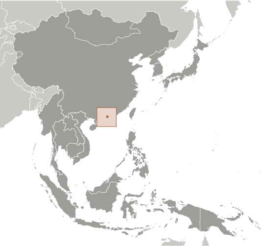
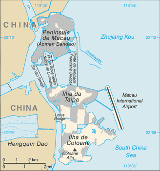
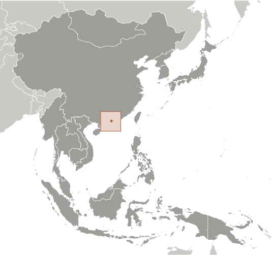
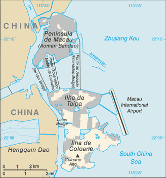

East & Southeast Asia :: MACAU
Introduction :: MACAU
-
Colonized by the Portuguese in the 16th century, Macau was the first European settlement in the Far East. Pursuant to an agreement signed by China and Portugal on 13 April 1987, Macau became the Macau Special Administrative Region of the People's Republic of China on 20 December 1999. In this agreement, China promised that, under its "one country, two systems" formula, China's political and economic system would not be imposed on Macau, and that Macau would enjoy a "high degree of autonomy" in all matters except foreign affairs and defense for the subsequent 50 years.
Geography :: MACAU
-
Eastern Asia, bordering the South China Sea and China22 10 N, 113 33 ESoutheast Asiatotal: 28.2 sq kmland: 28.2 sq kmwater: 0 sq kmcountry comparison to the world: 238less than one-sixth the size of Washington, DCtotal: 3 kmregional border(s) (1): China 3 km41 kmnot specifiedsubtropical; marine with cool winters, warm summersgenerally flatmean elevation: NAelevation extremes: lowest point: South China Sea 0 mhighest point: Alto Coloane 172 mNEGLagricultural land: 0%arable land 0%; permanent crops 0%; permanent pasture 0%forest: 0%other: 100% (urban area) (2011 est.)0 sq km (2012)population fairly equally distributedtyphoonsair pollution; coastal waters pollution; insufficient policies in reducing and recycling solid wastes; increasing population density worsening noise pollutionparty to: Marine Dumping (associate member), Ship Pollution (associate member)essentially urban; an area of land reclaimed from the sea measuring 5.2 sq km and known as Cotai now connects the islands of Coloane and Taipa; the island area is connected to the mainland peninsula by three bridges
People and Society :: MACAU
-
601,969 (July 2017 est.)note: Macau's statistical agency estimated the total population to be approximately 644,900 as of 31 December 2016country comparison to the world: 170noun: Chineseadjective: ChineseChinese 92.4%, Portuguese 0.6%, mixed 1.1%, other 5.9% (includes Macanese - mixed Portuguese and Asian ancestry) (2011 est.)Cantonese 83.3%, Mandarin 5%, Hokkien 3.7%, English 2.3%, other Chinese dialects 2%, Tagalog 1.7%, Portuguese 0.7%, other 1.3%note: Chinese and Portuguese are official languages (2011 est.)Buddhist 50%, Roman Catholic 15%, none or other 35% (1997 est.)0-14 years: 14.1% (male 44,133/female 40,764)15-24 years: 11.73% (male 37,194/female 33,418)25-54 years: 50.1% (male 134,244/female 167,318)55-64 years: 13.5% (male 40,837/female 40,423)65 years and over: 10.57% (male 29,764/female 33,874) (2017 est.)total dependency ratio: 26.6youth dependency ratio: 15.7elderly dependency ratio: 10.9potential support ratio: 9.2 (2015 est.)total: 39.3 yearsmale: 39.5 yearsfemale: 39.1 years (2017 est.)country comparison to the world: 570.74% (2017 est.)country comparison to the world: 1468.6 births/1,000 population (2017 est.)country comparison to the world: 2164.5 deaths/1,000 population (2017 est.)country comparison to the world: 2053.3 migrant(s)/1,000 population (2017 est.)country comparison to the world: 33population fairly equally distributedurban population: 100% of total population (2017)rate of urbanization: 1.39% annual rate of change (2015-20 est.)at birth: 1.05 male(s)/female0-14 years: 1.09 male(s)/female15-24 years: 1.11 male(s)/female25-54 years: 0.8 male(s)/female55-64 years: 1.01 male(s)/female65 years and over: 0.88 male(s)/femaletotal population: 0.91 male(s)/female (2016 est.)total: 3.1 deaths/1,000 live birthsmale: 3.3 deaths/1,000 live birthsfemale: 2.9 deaths/1,000 live births (2017 est.)country comparison to the world: 214total population: 84.6 yearsmale: 81.6 yearsfemale: 87.7 years (2017 est.)country comparison to the world: 40.95 children born/woman (2017 est.)country comparison to the world: 2233.11 physicians/1,000 population (2010)NANANA2% of GDP (2014)country comparison to the world: 148definition: age 15 and over can read and writetotal population: 96.5%male: 98.2%female: 95% (2016 est.)total: 15 yearsmale: 14 yearsfemale: 15 years (2015)total: 4.5%male: 5.7%female: 3.8% (2015 est.)country comparison to the world: 123
Government :: MACAU
-
conventional long form: Macau Special Administrative Regionconventional short form: Macauofficial long form: Aomen Tebie Xingzhengqu (Chinese); Regiao Administrativa Especial de Macau (Portuguese)official short form: Aomen (Chinese); Macau (Portuguese)etymology: name is thought to derive from the A-Ma Temple - built in 1488 and dedicated to Mazu, the goddess of seafarers and fishermen - which is referred to locally as "Maa Gok" - and in Portuguese became "Macau"; the Chinese name Aomen means "inlet gates"special administrative region of the People's Republic of Chinapresidential limited democracy; a special administrative region of the People's Republic of Chinanone (special administrative region of the People's Republic of China)none (special administrative region of China)National Day (anniversary of the Founding of the People's Republic of China), 1 October (1949); note - 20 December (1999) is celebrated as Macau Special Administrative Region Establishment Dayprevious 1976 (Organic Statute of Macau, under Portuguese authority); latest adopted 31 March 1993, effective 20 December 1999 (Basic Law of the Macau Special Administrative Region of the People's Republic of China serves as Macau's constitution); amended 2005, 2012 (2016)civil law system based on the Portuguese modelsee China18 years of age in direct elections for some legislative positions, universal for permanent residents living in Macau for the past 7 years; note - indirect elections are limited to organizations registered as "corporate voters" and an election committee for the chief executive drawn from broad regional groupings, municipal organizations, central government bodies, and elected Macau officialschief of state: President of China XI Jinping (since 14 March 2013)head of government: Chief Executive Fernando CHUI Sai On (since 20 December 2009)cabinet: Executive Council appointed by the chief executiveelections/appointments: president indirectly elected by National People's Congress for a 5-year term (eligible for a second term); chief executive chosen by a 400-member Election Committee for a 5-year term (eligible for a second term); election last held on 29 August 2014 (next to be held in 2019); note - the Legislative Assembly in August 2012 voted to expand the Election Committee to 400 from 300 seats for the 2014 electionelection results: Fernando CHUI Sai On reelected chief executive; Election Committee vote count - 380 of 396description: unicameral Legislative Council or Regiao Administrativa Especial de Macau (33 seats; 14 members directly elected by proportional representation vote, 12 indirectly elected by an electoral college of professional and commercial interest groups, and 7 appointed by the chief executive; members serve 4-year terms)elections: last held on 17 September 2017 (next to be held in 2021)election results: percent of vote - UMG 10%, UPD 9.7%, ACUM 8.6%, NE 8.3%, UPP 7.2, ANMD 6.6%, NUDM 6.1%, ACDM 5.9%, APMD 5.8%, Civic Watch 5.6%, ABL 5.5%, ANPM 5.3%, other 15.4%; seats by political group - UMG 2, UPD 2, ABL 1, ACDM 1, ACUM 1, ANMD 1, ANPM 1, APMD 1, Civic Watch 1, NE 1, NUDM 1, UPP 1; 12 seats filled by professional and business groups; 7 members appointed by the chief executivehighest court(s): Court of Final Appeal of Macau Special Administrative Region (consists of the court president and 2 associate justices)judge selection and term of office: justices appointed by the Macau chief executive upon the recommendation of an independent commission of judges, lawyers, and "eminent" persons; judge tenure NAsubordinate courts: Court of Second Instance; Court of First instance; Lower Court; Administrative CourtAlliance for Change or APM [Melinda CHAN Mei-yi]Alliance for a Happy Home or ABL [WONG Kit-cheng] (an electoral list of UPP)Civic Watch or Civico [Agnes LAM Iok-fong]Macau-Guangdong Union or UMG [MAK Soi-kun]Macau Citizens' Development Association or ACDM [Becky SONG Pek-kei] (an electoral list of ACUM)New Democratic Macau Association or ANMD [AU Kam-san]New Hope or NE [Jose Maria Pereira COUTINHO]New Macau Association or AMN [Sulu SOU Ka-hou]New Union for Macau's Development or NUDM [Angela LEONG On-kei]Prosperous Democratic Macau Association or APMD (an electoral list of the AMN)Union for Development or UPD [Ella LEI Cheng-I]Union for Promoting Progress or UPP [HO Ion-sang]United Citizens Association of Macau or ACUM [CHAN Meng-kam]note: there is no political party ordinance, so there are no registered political parties; politically active groups register as societies or companiesBar-Bending Workers' Association [WONG Wai-Man]Democratic Action [LEE Kin-yun]Macau New Chinese Youth Association (Associacao de Nova Juventude Chinesa de Macau) or ANJCM [LEONG Sin-man]Macau Workers' Union [HO Heng-kuok]New Macau Association [Antonio NG Kuok-cheong]Workers' Self-Help Union [CHEONG Weng-fat]ICC (national committees), IHO, IMF, IMO (associate), Interpol (subbureau), ISO (correspondent), UNESCO (associate), UNWTO (associate), UPU, WCO, WMO, WTOnone (Special Administrative Region of China)the US has no offices in Macau; US Consulate General in Hong Kong is accredited to Macaugreen with a lotus flower above a stylized bridge and water in white, beneath an arc of five gold, five-pointed stars: one large in the center of the arc and two smaller on either side; the lotus is the floral emblem of Macau, the three petals represent the peninsula and two islands that make up Macau; the five stars echo those on the flag of Chinalotus blossom; national colors: green, white, yellownote: as a Special Administrative Region of China, "Yiyongjun Jinxingqu" is the official anthem (see China)
Economy :: MACAU
-
Since opening up its locally-controlled casino industry to foreign competition in 2001, Macau has attracted tens of billions of dollars in foreign investment, transforming the territory into one of the world's largest gaming centers. Macau's gaming and tourism businesses were fueled by China's decision to relax travel restrictions on Chinese citizens wishing to visit Macau. In 2016, Macau's gaming-related taxes accounted for more than 76% of total government revenue.Macau's economy slowed dramatically in 2009 as a result of the global economic slowdown, but strong growth resumed in the 2010-13 period, largely on the back of tourism from mainland China and the gaming sectors. In 2015, this city of 646,800 hosted nearly 30.7 million visitors. Almost 67% came from mainland China. Macau's traditional manufacturing industry has slowed greatly since the termination of the Multi-Fiber Agreement in 2005. Services export — primarily gaming — increasingly has driven Macau’s economic performance. Mainland China’s ongoing anti-corruption campaign has brought Macau’s gambling boom to a halt, with spending in casinos contracting 34.3% in 2015. As a result, Macau's inflation-adjusted GDP contracted 20.3% in 2015, down from double-digit expansion rates in the period 2010-13, and another 4.7% in 2016.Macau continues to face the challenges of managing its growing casino industry, risks from money-laundering activities, and the need to diversify the economy away from heavy dependence on gaming revenues. Macau's currency, the pataca, is closely tied to the Hong Kong dollar, which is also freely accepted in the territory.$63.75 billion (2016 est.)$64.32 billion (2015 est.)$81.1 billion (2014 est.)note: data are in 2016 dollarscountry comparison to the world: 104$44.86 billion (2016 est.)-2.1% (2016 est.)-21.5% (2015 est.)-1.2% (2014 est.)country comparison to the world: 212$98,800 (2016 est.)$100,700 (2015 est.)$130,500 (2014 est.)country comparison to the world: 6household consumption: 26.6%government consumption: 10.3%investment in fixed capital: 21.6%investment in inventories: 0.4%exports of goods and services: 75.7%imports of goods and services: -34.7% (2016 est.)agriculture: 0%industry: 12.2%services: 87.8% (2016 est.)only 2% of land area is cultivated, mainly by vegetable growers; fishing, mostly for crustaceans, is important; some of the catch is exported to Hong Kongtourism, gambling, clothing, textiles, electronics, footwear, toys3% (2016 est.)country comparison to the world: 86397,800 (2016 est.)country comparison to the world: 160manufacturing: 2.5%construction: 9.8%transport and communications: 4.4%wholesale and retail trade: 12.4%restaurants and hotels: 15%gambling: 25.9%public sector: 7.1%financial services: 2.6%other services: 20.3% (2013 est.)1.9% (2016 est.)1.8% (2015 est.)country comparison to the world: 13NA%lowest 10%: NA%highest 10%: NA%35 (2013)38 (2008)country comparison to the world: 94revenues: $12.81 billionexpenditures: $10.11 billion (2016 est.)29% of GDP (2016 est.)country comparison to the world: 856.1% of GDP (2016 est.)country comparison to the world: 60% of GDP (2016 est.)0% of GDP (2015 est.)country comparison to the world: 206calendar year2.4% (2016 est.)4.6% (2015 est.)country comparison to the world: 1305.25% (31 December 2016 est.)5.25% (31 December 2015 est.)country comparison to the world: 139$7.783 billion (31 December 2016 est.)$7.561 billion (31 December 2015 est.)country comparison to the world: 88$66.57 billion (31 December 2016 est.)$59.21 billion (31 December 2015 est.)country comparison to the world: 62$17.16 billion (31 December 2016 est.)$10.09 billion (31 December 2015 est.)country comparison to the world: 93$85.5 billion (2 March 2012 est.)$46.1 billion (31 February 2011 est.)$2.3 billion (31 December 2008 est.)country comparison to the world: 43$12.31 billion (2016 est.)$11.56 billion (2015 est.)country comparison to the world: 21$1.137 billion (2013 est.)$1.959 billion (2015 est.)note: includes reexportscountry comparison to the world: 155clothing, textiles, footwear, toys, electronics, machinery and partsHong Kong 64.1%, China 20.2% (2016)$14.2 billion (2014 est.)$10.13 billion (2015 est.)country comparison to the world: 84raw materials and semi-manufactured goods, consumer goods (foodstuffs, beverages, tobacco, garments and footwear, motor vehicles), capital goods, mineral fuels and oilsChina 36.7%, Hong Kong 8.6%, Italy 7.9%, Switzerland 7.6%, France 7.4%, Japan 6.3%, US 5.8% (2016)$19.49 billion (31 December 2016 est.)$18.89 billion (31 December 2015 est.)note: the Fiscal Reserves Act that came into force on 1 January 2012 requires the fiscal reserves to be separated from the foreign exchange reserves and to be managed separately; the transfer of assets took place in February 2012country comparison to the world: 63$0 (31 December 2013)$0 (31 December 2012)country comparison to the world: 204$18.91 billion (31 December 2011 est.)$14.91 billion (31 December 2011 est.)country comparison to the world: 80$1.166 billion (2012 est.)$667.8 million (2011 est.)country comparison to the world: 84patacas (MOP) per US dollar -7.9951 (2016 est.)7.9951 (2015 est.)7.985 (2014 est.)7.9871 (2013 est.)7.99 (2012 est.)
Energy :: MACAU
-
population without electricity: 59,742electrification - total population: 91%electrification - urban areas: 91%electrification - rural areas: 72% (2012)904 million kWh (2015 est.)country comparison to the world: 1564.834 billion kWh (2015 est.)country comparison to the world: 1230 kWh (2016 est.)country comparison to the world: 1644.306 billion kWh (2016 est.)country comparison to the world: 44472,000 kW (2015 est.)country comparison to the world: 148100% of total installed capacity (2015 est.)country comparison to the world: 110% of total installed capacity (2015 est.)country comparison to the world: 1340% of total installed capacity (2015 est.)country comparison to the world: 1850% of total installed capacity (2015 est.)country comparison to the world: 1950 bbl/day (2016 est.)country comparison to the world: 1640 bbl/day (2014 est.)country comparison to the world: 1570 bbl/day (2014 est.)country comparison to the world: 1550 bbl (1 January 2017 es)country comparison to the world: 1610 bbl/day (2014 est.)country comparison to the world: 16812,700 bbl/day (2015 est.)country comparison to the world: 1560 bbl/day (2014 est.)country comparison to the world: 17510,760 bbl/day (2014 est.)country comparison to the world: 1410 cu m (2013 est.)country comparison to the world: 163355,000 cu m (2013 est.)country comparison to the world: 1150 cu m (2013 est.)country comparison to the world: 142371,000 cu m (2013 est.)country comparison to the world: 780 cu m (1 January 2014 es)country comparison to the world: 1651.8 million Mt (2013 est.)country comparison to the world: 154
Communications :: MACAU
-
total: 142,000subscriptions per 100 inhabitants: 24 (July 2016 est.)country comparison to the world: 133total: 1.896 millionsubscriptions per 100 inhabitants: 320 (July 2016 est.)country comparison to the world: 154general assessment: fairly modern communication facilities maintained for domestic and international servicesdomestic: termination of monopoly over mobile-cellular telephone services in 2001 spurred sharp increase in subscriptions with mobile-cellular teledensity exceeding 300 per 100 persons; fixed-line subscribership appears to have peaked and is now in declineinternational: country code - 853; landing point for the SEA-ME-WE-3 submarine cable network that provides links to Asia, the Middle East, and Europe; HF radiotelephone communication facility; satellite earth station - 1 Intelsat (Indian Ocean) (2016)local government dominates broadcast media; 2 television stations operated by the government with one broadcasting in Portuguese and the other in Cantonese and Mandarin; 1 cable TV and 4 satellite TV services available; 3 radio stations broadcasting, of which 2 are government-operated (2015).mototal: 460,000percent of population: 77.6% (July 2016 est.)country comparison to the world: 150
Transportation :: MACAU
-
number of registered air carriers: 1 (registered in China)inventory of registered aircraft operated by air carriers: 17 (registered in China)annual passenger traffic on registered air carriers: 2,276,436annual freight traffic on registered air carriers: 25.435 million mt-km (2015)B-M (2016)1 (2013)country comparison to the world: 224total: 1over 3,047 m: 1 (2017)2 (2013)total: 424 kmpaved: 424 km (2014)country comparison to the world: 200major seaport(s): Macau
Military and Security :: MACAU
-
no regular indigenous military forcesdefense is the responsibility of China
Transnational Issues :: MACAU
-
nonetransshipment point for drugs going into mainland China; consumer of opiates and amphetamines